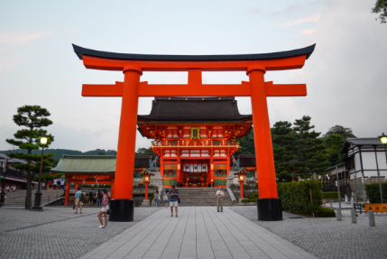
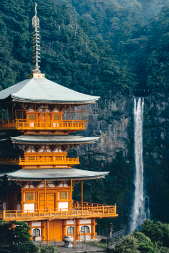
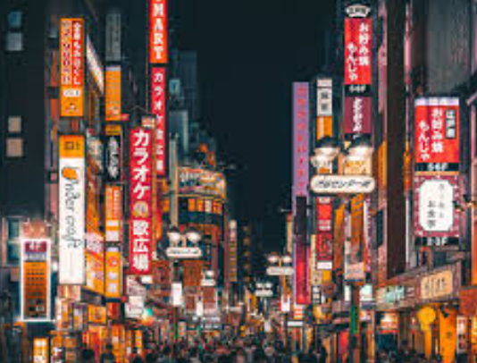
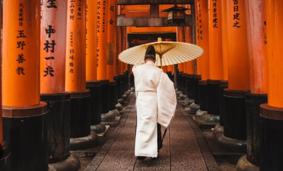
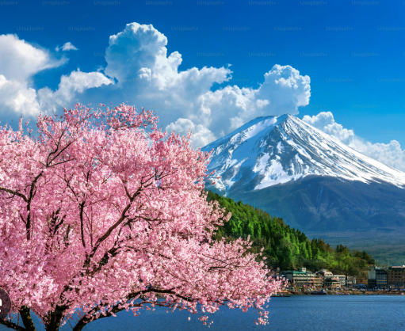
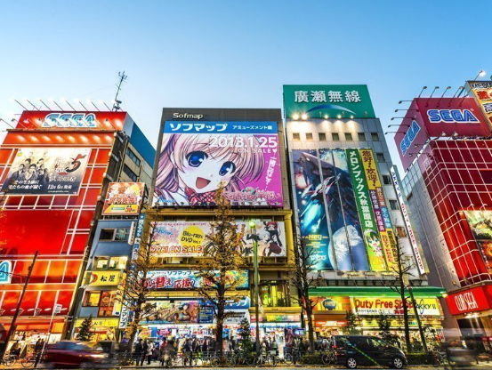

Galería de imágenes



Lugares de interés

Tokio
La capital de Japón, una mezcla de modernidad y tradición.
Ubicación: Región de Kanto

Kioto
Famosa por sus templos históricos y jardines tradicionales.
Ubicación: Región de Kansai

Monte Fuji
El pico más alto de Japón, un símbolo icónico del país.
Ubicación: Región de Chubu

Osaka
Conocida por su comida callejera y su castillo histórico.
Ubicación: Región de Kansai